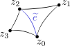

|
CGAL 6.0 - 2D Hyperbolic Surface Triangulations
|
Loading...
Searching...
No Matches
|
CGAL 6.0 - 2D Hyperbolic Surface Triangulations
|
This package enables building and handling triangulations of closed orientable hyperbolic surfaces. Functionalities are offered such as the Delaunay flip algorithm, and the construction of a portion of the lift of the triangulation in the Poincaré disk model of the hyperbolic plane. A triangulation of a surface can be generated from a convex fundamental domain of the surface. A method is offered that generates such domains in genus two.
We assume some familiarity with basic notions from covering space theory, and from the theory of hyperbolic surfaces. The Poincaré disk \( \mathbb{D} \) is a model of the hyperbolic plane whose point set is the open unit disk of the complex plane \( \mathbb{C} \). In this package, every hyperbolic surface \( S \) is closed (compact, and without boundary) and orientable: this is without further mention. The Poincaré disk \( \mathbb{D} \) is a universal covering space for \( S \), whose projection map \( \pi: \mathbb{D} \to S \) is a (local) isometry. The pre-image set \( \pi^{-1}(x) \) of a point \( x \in S \) is infinite, its points are the lifts of \( x \). We usually denote by \( \widetilde x \) a lift of \( x \). Paths and triangulations of \( S \) can also be lifted in \( \mathbb{D} \).
Let \( S \) be a hyperbolic surface. For representing \( S \) on a computer, we cut \( S \) into "manageable" pieces. A graph \( G \) embedded on \( S \) is a cellular decomposition of \( S \) if every face (every connected component of \( S \setminus G \) ) is a topological disk. In this document, every edge of a graph \( G \) embedded on \( S \) is a geodesic on \( S \). We consider two types of cellular decompositions of \( S \):
We consider cellular decompositions \( G \) of \( S \) that have only one face. Cutting \( S \) open at the edges of \( G \) results in a hyperbolic polygon \( P \), which is a fundamental domain for \( S \). The edges of \( P \) are paired, so that every edge of \( G \) is cut into two edges that are paired in \( P \). Every hyperbolic surface admits a fundamental domain \( P \) that is convex, in that the interior angles of \( P \) do not exceed \( \pi \).
A triangulation of \( S \) can be obtained from a convex fundamental domain \( P \) of \( S \) by triangulating the interior of \( P \), and by gluing back the boundary edges that are paired in \( P \). The assumption that \( P \) is convex ensures that the interior of \( P \) can be triangulated naively by insertion of any maximal set of pairwise-disjoint arcs of \( P \).
This package can generate a convex fundamental domain \( P \) of a surface of genus two, with eight vertices \( z_0, \dots, z_7 \in \mathbb{C} \), whose side pairings are \( A B C D \overline{A} \overline{B} \overline{C} \overline{D} \). The vertices and the side pairings are in counter-clockwise order, the side between \( z_0 \) and \( z_1 \) is \( A \), and the side between \( z_4 \) and \( z_5 \) is \( \overline{A} \). These octagons are symmetric, i.e. \( z_i = -z_{i+4} \) for every \( i \), where indices are modulo eight. Such octagons are described in [1].
We represent every domain as a polygon in the Poincaré disk, given by the list of its vertices, and by the list of its side pairings. Concerning the generation of domains, in order to perform fast and exact computations with the generated domains, every vertex must be a complex number whose type supports fast and exact computations. Under this constraint, it is not known how to generate domains of surfaces of genus greater than two. In genus two, this package generates domains whose vertices belong to \( \mathbb{Q} + i \mathbb{Q} \) (their real and imaginary parts are rational numbers). The exact generation process can be found in [3], together with a proof that the surfaces that can be generated in this way are dense in the space of surfaces genus two.
Let \( T \) be a triangulation of a hyperbolic surface. We represent \( T \) by an instance of CGAL::Combinatorial_map whose edges are decorated with complex numbers. The complex number \( R_T(e) \in \mathbb{C} \) decorating an edge \( e \) of \( T \) is the cross ratio of \( e \) in \( T \), defined as follows. Consider the lift \( \widetilde T \) of \( T \) in the Poincaré disk \( \mathbb{D} \). In \( \widetilde T \), let \( \widetilde e \) be a lift of \( e \). Orient \( \widetilde e \) arbitrarily, and let \( z_0 \in \mathbb{D} \) and \( z_2 \in \mathbb{D} \) be respectively the first and second vertices of \( \widetilde e \). In \( \widetilde T \), consider the triangle on the right of \( \widetilde e \), and let \( z_1 \in \mathbb{D} \) be the third vertex of this triangle (the vertex distinct from \( z_0 \) and \( z_2 \)). Similarly, consider the triangle on the left of \( \widetilde e \), and let \( z_3 \in \mathbb{D} \) be the third vertex of this triangle. Then \( R_T(e) = (z_3-z_1)*(z_2-z_0) / ((z_3-z_0)*(z_2-z_1)) \). This definition does not depend on the choice of the lift \( \widetilde e \), nor on the orientation of \( \widetilde e \). See [3] for details.

While the triangulation \( T \) is unambiguously determined by the combinatorial map and its cross ratios, the internal representation of \( T \) can contain some additional data: the anchor. The anchor is used when building a portion of the lift of \( T \) in the Poincaré disk \( \mathbb{D} \). It contains a lift \( t \) of a triangle of \( T \) in \( \mathbb{D} \): \( t \) is represented by its three vertices in \( \mathbb{D} \), and by a dart of the corresponding triangle in the combinatorial map of \( T \).
Let \( T \) be a triangulation of a hyperbolic surface. An edge \( e \) of \( T \) satisfies the Delaunay criterion if the imaginary part of its cross ratio \(R_T(e)\) is non-positive. This definition is equivalent to the usual "empty disk" formulation. Then \( T \) is a Delaunay triangulation if every edge of \( T \) satisfies the Delaunay criterion. If an edge \(e \) of \( T \) does not satisfy the Delaunay criterion, then the two triangles incident to \( e \) form a strictly convex quadrilateron, so \( e \) can be deleted from \( T \) and replaced by the other diagonal of the quadrilateron. This operation is called a Delaunay flip. When a flip occurs, the cross ratios of the involved edges are modified via simple formulas. The Delaunay flip algorithm flips edges that do not satisfy the Delaunay criterion as long as possible, with no preference on the order of the flips. This algorithm terminates, and outputs a Delaunay triangulation of \( S \) [2].
The package contains three main classes:
CGAL::Hyperbolic_surface_triangulation_2 represents a triangulation of a hyperbolic surface. It offers functionalities such as the generation of the triangulation from a convex fundamental domain, the Delaunay flip algorithm and the construction of a portion of the lift of the triangulation in the Poincaré disk.CGAL::Hyperbolic_fundamental_domain_2 represents a convex fundamental domain of a hyperbolic surface.CGAL::Hyperbolic_fundamental_domain_factory_2 is a factory class, whose purpose is to generate some convex fundamental domains of surfaces of genus two.The secondary class CGAL::Hyperbolic_isometry_2 deals with isometries in the Poincaré disk.
Most classes of the package are templated by the concept HyperbolicSurfaceTraits_2, it is a refinement of HyperbolicDelaunayTriangulationTraits_2 and is modeled by CGAL::Hyperbolic_surface_traits_2. Also, the concept ComplexNumber describes a complex number type modeled by CGAL::Complex_number.
The example below generates a convex fundamental domain of a surface of genus two, triangulates the domain, applies the Delaunay flip algorithm to the resulting triangulation, saves and prints the Delaunay triangulation.
File Hyperbolic_surface_triangulation_2/hyperbolic_surface_triangulation.cpp
This package implements the Delaunay flip algorithm described in the hyperbolic setting by Vincent Despré, Jean-Marc Schlenker, and Monique Teillaud in [2] (with a different data structure for representing triangulations, see [3]). It also implements the generation of domains described by Vincent Despré, Loïc Dubois, Benedikt Kolbe, and Monique Teillaud in [3], based on results of Aline Aigon-Dupuy, Peter Buser, Michel Cibils, Alfred F Künzle, and Frank Steiner [1]. The code and the documentation of the package were written by Loïc Dubois, under regular discussions with Vincent Despré and Monique Teillaud. The authors acknowledge support from the grants SoS and MIN-MAX of the French National Research Agency ANR.